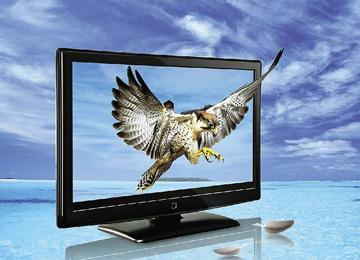

展开分类
展开分类

产品编号：0001
产品名称：液晶电视介绍
产品规格：
产品类别：产品小类1
产品简介：LCD，全称“Liquid Crystal Display”，译为液态晶体显示器，简称“液晶显示器”。液晶是一种介于固态和液态之间的物质，是具有规则性分子排列的有机化合物
LCD，全称“Liquid Crystal Display”，译为液态晶体显示器，简称“液晶显示器”。液晶是一种介于固态和液态之间的物质，是具有规则性分子排列的有机化合物，如果把它加热会呈现透明状的液体状态，把它冷却则会出现结晶颗粒的混浊固体状态。正是由于它的这种特性，所以被称之为液晶(LiquidCrystal)。用于液晶显示器的液晶分子结构排列类似细火柴棒，被称为Nematic液晶，采用此类液晶制造的液晶显示器也就称为LCD(Liquid Crystal Display)。而液晶电视是在两张玻璃之间的液晶内，加入电压，通过分子排列变化及曲折变化 再现画面，屏幕通过电子群的冲撞，制造画面并通过外部光线的透视反射来形成画面。
液晶电视与传统CRT和等离子相比一大优点还是省电，液晶只有同尺寸的CRT的一半功耗，比等离子更是低上好多。
与传统CRT相比液晶在环保方面也[1]表现的表现，这是因为液晶显示器内部不存在象CRT那样的高压元器件，所以其不至于出现由于高压导致的x射线超标的情况，所以其辐射指标普遍比CRT要低一些。
由于CRT显示器是靠偏转线圈产生的电磁场来控制电子束的，而由于电子束在屏幕上又不可能绝对定位，所以CRT显示器往往会存在不同程度的几何失真，线性失真情况。而液晶显示器由于其原理问题不会出现任何的几何失真，线性失真，这也是一大优点。
液晶显示器可视面积大：一般CRT显示器在显像时，显示器画面四周会有一些黑边占去可视画面；而液晶显示器的画面不会有这些问题。为完全可视画面。例如：13寸的液晶显示器就相当于15寸的CRT显示器。 高分辨率\精细的画质，比CRT和等离子都有很大的优势。